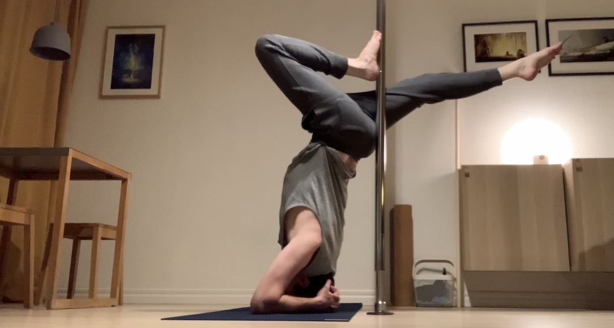

Hej!
Välkommen till min hemsida. Jag heter Alexander och jobbar som konsult inom systemutveckling i Stockholm. Jag har lång erfarenhet av utveckling inom .NET och nodejs, samt en hel del blandade erfarenheter av allt från business intelligence till embedded linux, nätverk och UX-arbete.
Varför jobbar jag med teknik?
Jag har varit förtjust i både fordon och tekniska prylar sedan jag var liten. Jag fick min första dator och modemuppkoppling omkring 1997 och blev snabbt nyfiken på hur jag kunde göra en egen hemsida och publicera den på internet. Där någonstans påbörjade jag min resa av experimenterande och lärande som jag fortfarande befinner mig på.
Mitt arbete som IT-konsult är en passion för mig. De flesta myndigheter och företag är i stort behov av att inte bara utveckla bättre mjukvara och tjänster utan också utveckla sig själva och sin kultur. Som konsult älskar jag att arbeta med teknik och kod i kombination med kulturella förändringar som hjälper organisationer att bli mer agila. Jag brinner för arbetet som leder till att organisationer rör sig mot en kultur av kontinuerligt experimenterande, lärande och psykologisk trygghet.
Bakgrund
Min resa inom IT började i slutet av 90-talet då jag började lära mig grundläggande HTML för att göra hemsidor. Följande år fortsatte jag med att lära mig ASP, PHP och grundläggande grafisk design för webben. Omkring 2002 byggde jag min första egna server och jag började experimentera med linux. Att drifta en egen server hemma ledde till att jag med tiden lärde mig mer och mer om linux, freebsd, nätverk och att konfigurera olika typer av servrar för webb, irc, ftp m.m.
Det som började som en ren hobby blev successivt ett frilans-gig när vänner och bekanta började erbjuda mig betalt för att hjälpa till med hemsidor, felsökning och uppsättning av datorer och servrar.
Efter gymnasiet pluggade jag maskinteknik ett par år men hoppade till slut av studierna och tog jobb som konsult i Stockholm i början av 2008. Jag har jobbat heltid som konsult sedan dess och samlat på mig erfarenheter från ett stort antal projekt.
Specialistkompetens
Jag trivs mycket bra i en roll där jag levererar kod samtidigt som jag hjälper organisationen att förfina sin metodik och kultur kring lärande och systemutveckling.
Under min karriär har jag haft privilegiet att jobba med en hel del olika företag, både stora och små. Jag har fått erfara både lyckade och mindre lyckade IT-projekt i en hel del olika brancher och samlat på mig många erfarenheter från dessa
Övrigt
På fritiden tränar jag dans, både contemporary och pole samt en del yoga. Jag tycker också om att läsa böcker och vandra.